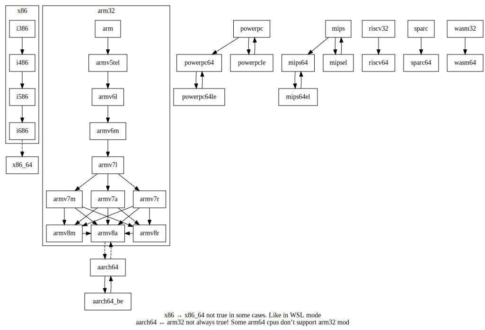

交叉编译和安装跨平台程序
nixpkgs原生支持x86和arm指令集。 通过对nixpkgs配置可以轻松实现交叉编译， 跨平台程序的安装等功能。
太长不看
-
x86_64上的aarch64交叉编译器
(with import <nixpkgs> {crossSystem="aarch64-linux";}; stdenv.cc) -
aarch64的hello应用程序
(with import <nixpkgs> {localSystem.system="aarch64-linux";crossSystem="aarch64-linux";}; hello) -
应用于nix-shell的例子
目录
简介
nixpkgs1众多输入参数中，包含localSystem和crossSystem2。
-
localSystemThe system packages will be built on.
本地系统，即工具链运行的平台。
-
crossSystemThe system packages will ultimately be run on.
程序运行的平台。
通过localSystem和crossSystem不同值的组合，
可以实现交叉编译、安装其他架构的原生应用。
下面从localSystem和crossSystem的语法和应用两方面进行介绍。
语法章节从nixpkgs源码的角度出发，介绍其语法的组成。
应用章节围绕一个nix-shell脚本的实际例子，
介绍x86_64平台的交叉编译和安装aarch64架构的原生应用的方法。
localSystem和crossSystem的语法
localSystem和crossSystem由4个维度去刻画一个系统：cpu, vendor, kernel, abi。
localSystem和crossSystem的值为字符串或者{system=字符串;}3。
system字符串为可以包含前述4个维度的1~4个维度。
nix在解析时会将省略的维度按以某些默认值补充完整。
维度之间之间用-分割。
因此system字符串形式上为"cpu-vendor-kernel-abi"。
字符串不同数量的维度及其可用的值，
按匹配优先级由高到低列举如下4，
cpu-vendor-kernel-abi
| system字符串 | cpu | vendor | kernel | abi |
|---|---|---|---|---|
| "avr" | avr | none | unknown | |
| "{cpu}-cygwin" | {cpu} | windows | cygnus | |
| "{cpu}-windows" | {cpu} | windows | msvc | |
| "{cpu}-elf" | {cpu} | unknown | none | elf |
| "{cpu}-{kernel}" | {cpu} | {kernel} | ||
| "{cpu}-apple-{kernel}" | {cpu} | apple | {kernel} | |
| "{cpu}-linux-gnu" | {cpu} | linux | gnu | |
| "{cpu}-{vendor}-mingw32" | {cpu} | {vendor} | windows | |
| "{cpu}-{vendor}-wasi" | {cpu} | {vendor} | wasi | |
| "{cpu}-{vendor}-redox" | {cpu} | {vendor} | redox | |
| "{cpu}-{vendor}-mmixware" | {cpu} | {vendor} | mmixware | |
| "{cpu}-{vendor}-netbsd*" | {cpu} | {vendor} | netbsd* | |
| "{cpu}-{vendor}-eabi" | {cpu} | unknown | {kernel} | eabi |
| "{cpu}-{vendor}-eabihf" | {cpu} | unknown | {kernel} | eabihf |
| "{cpu}-{kernel}-elf" | {cpu} | unknown | {kernel} | elf |
| "{cpu}-*-{ghcjs}" | {cpu} | unknown | ghcjs | |
| "{cpu}-{vendor}-genode" | {cpu} | {vendor} | genode | |
| "{cpu}-{vendor}-{kernel}-{abi} " | {cpu} | {vendor} | {kernel} | {abi} |
cpu
cpu字符串可取的值列举如下5,
| cpu字符串 | bits | significantByte | family | version | arch |
|---|---|---|---|---|---|
| "arm" | 32 | littleEndian | "arm" | ||
| "armv5tel" | 32 | littleEndian | "arm" | "5" | "armv5t" |
| "armv6m" | 32 | littleEndian | "arm" | "6" | "armv6-m" |
| "armv6l" | 32 | littleEndian | "arm" | "6" | "armv6" |
| "armv7a" | 32 | littleEndian | "arm" | "7" | "armv7-a" |
| "armv7r" | 32 | littleEndian | "arm" | "7" | "armv7-r" |
| "armv7m" | 32 | littleEndian | "arm" | "7" | "armv7-m" |
| "armv7l" | 32 | littleEndian | "arm" | "7" | "armv7" |
| "armv8a" | 32 | littleEndian | "arm" | "8" | "armv8-a" |
| "armv8r" | 32 | littleEndian | "arm" | "8" | "armv8-a" |
| "armv8m" | 32 | littleEndian | "arm" | "8" | "armv8-m" |
| "aarch64" | 64 | littleEndian | "arm" | "8" | "armv8-a" |
| "aarch64_be" | 64 | bigEndian | "arm" | "8" | "armv8-a" |
| "i386" | 32 | littleEndian | "x86" | "i386" | |
| "i486" | 32 | littleEndian | "x86" | "i486" | |
| "i586" | 32 | littleEndian | "x86" | "i586" | |
| "i686" | 32 | littleEndian | "x86" | "i686" | |
| "x86_64" | 64 | littleEndian | "x86" | "x86-64" | |
| "mips" | 32 | bigEndian | "mips" | ||
| "mipsel" | 32 | littleEndian | "mips" | ||
| "mips64" | 64 | bigEndian | "mips" | ||
| "mips64el" | 64 | littleEndian | "mips" | ||
| "mmix" | 64 | bigEndian | "mmix" | ||
| "m68k" | 32 | bigEndian | "m68k" | ||
| "powerpc" | 32 | bigEndian | "power" | ||
| "powerpc64" | 64 | bigEndian | "power" | ||
| "powerpc64le" | 64 | littleEndian | "power" | ||
| "powerpcle" | 32 | littleEndian | "power" | ||
| "riscv32" | 32 | littleEndian | "riscv" | ||
| "riscv64" | 64 | littleEndian | "riscv" | ||
| "s390" | 32 | bigEndian | "s390" | ||
| "s390x" | 64 | bigEndian | "s390" | ||
| "sparc" | 32 | bigEndian | "sparc" | ||
| "sparc64" | 64 | bigEndian | "sparc" | ||
| "wasm32" | 32 | littleEndian | "wasm" | ||
| "wasm64" | 64 | littleEndian | "wasm" | ||
| "alpha" | 64 | littleEndian | "alpha" | ||
| "msp430" | 16 | littleEndian | "msp430" | ||
| "avr" | 8 | "avr" | |||
| "vc4" | 32 | littleEndian | "vc4" | ||
| "or1k" | 32 | bigEndian | "or1k" | ||
| "js" | 32 | littleEndian | "js" |
cpuTypes
cpu之间的兼容性（具有传递性和自反性）如下6，

vendor
vendor字符串可取值"apple", "pc"(windows), "w64"(MinGW-w64), "none", "unknown"(default)。
kernel
kernel字符串可取值如下表7，
| kernel字符串 | execFormat | families |
|---|---|---|
| "macos" | macho | darwin |
| "darwin" | ↑ | ↑ |
| "ios" | macho | darwin |
| "watchos" | ↑ | ↑ |
| "tvos" | ↑ | ↑ |
| "freebsd" | elf | bsd |
| "linux" | elf | |
| "netbsd" | elf | bsd |
| "none" | unknown | |
| "openbsd" | elf | bsd |
| "solaris" | elf | |
| "wasi" | wasm | |
| "redox" | elf | |
| "windows" | pe | |
| "win32" | ↑ | ↑ |
| "ghcjs" | unknown | |
| "genode" | elf | |
| "mmixware" | unknown |
abi
abi字符串可取的值列举如下8，
| abi字符串 | float | abi | Note |
|---|---|---|---|
| "cygnus" | |||
| "msvc" | |||
| "eabi" | soft | for ARM, PowerPC | |
| "eabihf" | hard | for ARM, PowerPC | |
| "elf" | |||
| "androideabi" | |||
| "android" | not 32-bit | ||
| "gnueabi" | soft | ||
| "gnueabihf" | hard | ||
| "gnu" | not 32-bit | ||
| "gnuabi64" | 64 | ||
| "musleabi" | soft | ||
| "musleabihf" | hard | ||
| "musl" | |||
| "uclibceabihf" | soft | ||
| "uclibceabi" | hard | ||
| "uclibc" | |||
| "unknown" |
localSystem和crossSystem的应用
aarch64交叉工具链和程序的详细例子
以x86为本地指令集，localSystem和crossSystem的组合有以下效果
↓crossSystem↓ →localSystem→ | "x86_64-linux" | "aarch64-linux" |
|---|---|---|
| "x86_64-linux" | 通常情况 | |
| "aarch64-linux" | 交叉编译aarch64 | 原生aarch64应用 |
因此基于这3种组合，可以在同一个shell环境中配置出3种软件， 代码见[cross_platform.nix]({{ site.repo_url }}/scripts/shell/cross_platform.nix)。
pkgs_arm_cross软件包的stdenv.cc为x86平台的arm交叉编译器。
nixpkgs channel只包含了原生x86应用和原生arm应用。
交叉编译的arm应用和原生arm应用的derivation不一样。
因此使用pkgs_arm_cross中的应用，
则会使用交叉编译器从源码开始编译arm应用，
而不是直接拉取nixpkgs channel的原生arm应用。
pkgs_arm_native软件包包含原生arm软件包。
从这个软件包拉取的应用和在arm平台的拉取到的应用一致。
例如figlet将直接从nix channel中拉取。
pkgs即x86原生的软件包。
shell_cross_platform.nix使用例子，
# 创建一个新的shell环境，包含stdenv.cc, figlet, qemu
$ nix-shell shell_cross_platform.nix
# 使用交叉编译工具链的c编译器
$ aarch64-unknown-linux-gnu-gcc helloworld.c -o helloworld
$ file helloworld
helloworld: ELF 64-bit LSB executable, ARM aarch64, version 1 (SYSV), dynamically linked, interpreter /nix/store/01kw0gb38phviarfv3fca49dpqh0qwlx-glibc-aarch64-unknown-linux-gnu-2.33-123/lib/ld-linux-aarch64.so.1, for GNU/Linux 2.6.32, with debug_info, not stripped
# arm原生应用
$ file `command -v figlet`
/nix/store/4f70f04bvd664n00jlnzccyzxd35lykw-figlet-2.2.5/bin/figlet: ELF 64-bit LSB executable, ARM aarch64, version 1 (SYSV), dynamically linked, interpreter /nix/store/rjc27shzir243n1w3127w713fijamf6v-glibc-2.33-123/lib/ld-linux-aarch64.so.1, for GNU/Linux 2.6.32, not stripped
# 直接执行figlet会出错
$ figlet
bash: /nix/store/4f70f04bvd664n00jlnzccyzxd35lykw-figlet-2.2.5/bin/figlet: cannot execute binary file: Exec format error
# 使用QEMU执行figlet即可
$ qemu-aarch64 `command -v figlet` miao!
_ _
_ __ ___ (_) __ _ ___ | |
| '_ ` _ \| |/ _` |/ _ \| |
| | | | | | | (_| | (_) |_|
|_| |_| |_|_|\__,_|\___/(_)
mips交叉工具链的例子
[cross_mips.nix]({{ site.repo_url }}/scripts/shell/cross_mips.nix)
引用
nixpkgs版本2022.01.20, commit hash: 7e149abe9db1509fa974bb2286f862a761ca0a07
nixpkgs/pkgs/top-level/default.nix
nixpkgs/lib/systems/default.nix: elaborate
nixpkgs/lib/systems/parse.nix: mkSkeletonFromList
nixpkgs/lib/systems/parse.nix: cpuTypes
nixpkgs/lib/systems/parse.nix: isCompatible
nixpkgs/lib/systems/parse.nix: kernels
nixpkgs/lib/systems/parse.nix: abis